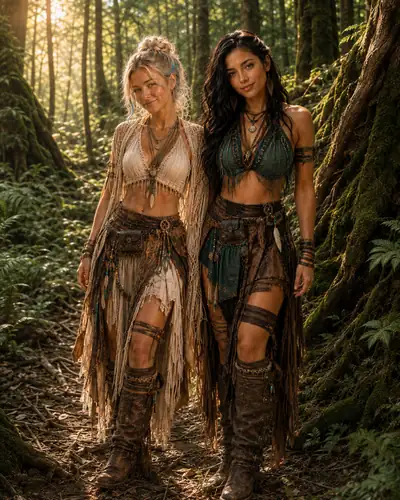
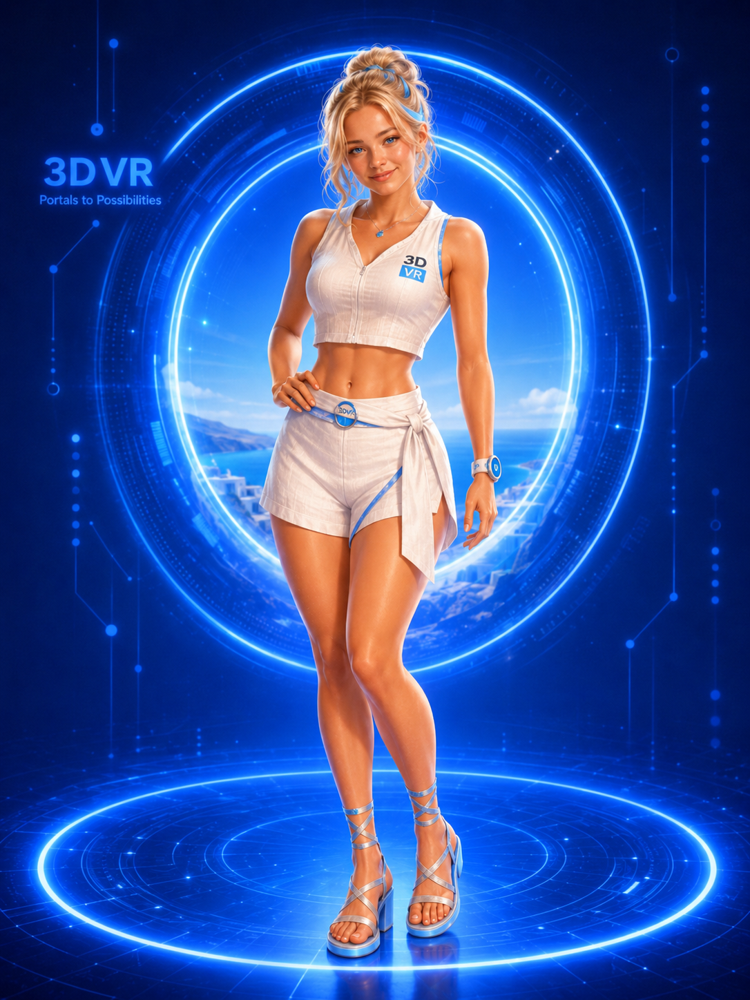
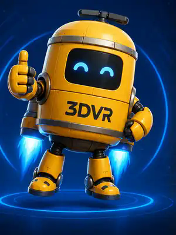

01
Thomas Stephens
Founder · technologist · audiovisual builder
Starts with “what if?” and usually ends up with another repo, another machine, or another portal. Story Thomas is basically Thomas with fewer practical limits.
Starts things

A living story built around a real crew
Some of us are real. Some of us aren't. We're building the same future.
The premise
3DVR already has a cast: programmers, designers, builders, artists, surfers, Linux nerds, business people, digital characters, and one tiny robot with opinions.
The universe keeps everybody recognizable, then turns the volume up. Real projects become missions. Remote collaboration becomes a distributed studio. A trip into the woods becomes a chapter.
The rule: don't invent the person — invent the adventure.
The fictional crew
Recurring characters with jobs, personalities, relationships, and room to evolve — including one very intentional mascot companion.

01 / 3DVR Girl
Explorer · builder · scout
Curious, calm, playful, and capable. 3DVR Girl is usually the first person through a strange door and the last one interested in making the technology look impressive just for its own sake.
She tests new worlds by living in them.
Open her character archive →02 / Kayla
Field guide · builder · co-worker
Kayla is grounded, outdoorsy, observant, and practical. She works alongside 3DVR Girl, especially when a mission leaves the polished parts of the Portal behind.
Their exact history is intentionally unwritten. They already trust each other. We get to discover why.

03 / 3DVR Bot
Mascot companion · helper · mechanic · tiny troublemaker
The little yellow robot that follows the crew into everything. 3DVR Bot communicates through chirps, glowing blue expressions, enthusiastic gestures, and the occasional dramatic jetpack launch.
Friendly, quirky, cute, useful, and fully robotic — less humanoid assistant, more tiny teammate with tools and opinions.
The real crew
Real names. Real skills. Slightly amplified story versions.
Founder · technologist · audiovisual builder
Starts with “what if?” and usually ends up with another repo, another machine, or another portal. Story Thomas is basically Thomas with fewer practical limits.

Programmer · surfer · photographer · physics background
Deep software experience, real-time systems, cameras, waves, physics, and the habit of actually testing things in the physical world.

Sales · finance · Linux
Keeps the builders connected to customers, prices, operations, and the minor detail that ambitious projects eventually have to pay for themselves.

Audiovisual designer · social media · 3D + web · Guatemala
Turns rough ideas into something people can see, hear, understand, and share. He gives the work a visual language instead of leaving it as another prototype.

Junior developer · game designer · cross-platform builder · Guatemala City
A computer nerd who likes building games and software across platforms. He is the most likely person to turn a useful prototype into something fun.
How the crew fits
No chosen-one mythology. The interesting part is what happens when very different people keep building together.
Season One · working canon
Not saving the galaxy. Just a crew building things, traveling, learning each other, and accidentally creating a world worth living in.
The Woods
3DVR Girl and Kayla take a field job beyond the last mapped node. Their teamwork is already effortless. Their backstory is not.
California ↔ Guatemala
Thomas, David, and Brandon discover that a studio does not need to be a building. It can be a set of people, tools, unfinished ideas, and a very persistent internet connection.
Ocean / workshop / wherever Mark is
Mark keeps taking serious engineering outside. Code, cameras, electronics, physics, and surf sessions keep colliding in unexpectedly useful ways.
Portal workshop
The crew's mascot companion develops favorite people, unexplained habits, and a suspiciously specific collection of beeps. The crew realizes the little yellow bot may understand them better than they understand it.
The boring spreadsheet dimension
Esai attempts the impossible: turning the crew's pile of projects into customers, budgets, operations, and something resembling a functioning business.
Long arc
The websites, machines, art, clothes, tools, communities, and experiments stop looking like separate projects. The crew realizes they have been designing a way of life.
Living canon
Kayla and 3DVR Girl's history can reveal itself. New people can enter the cast. Real projects can become chapters. The universe grows whenever the real crew does something worth turning into a story.